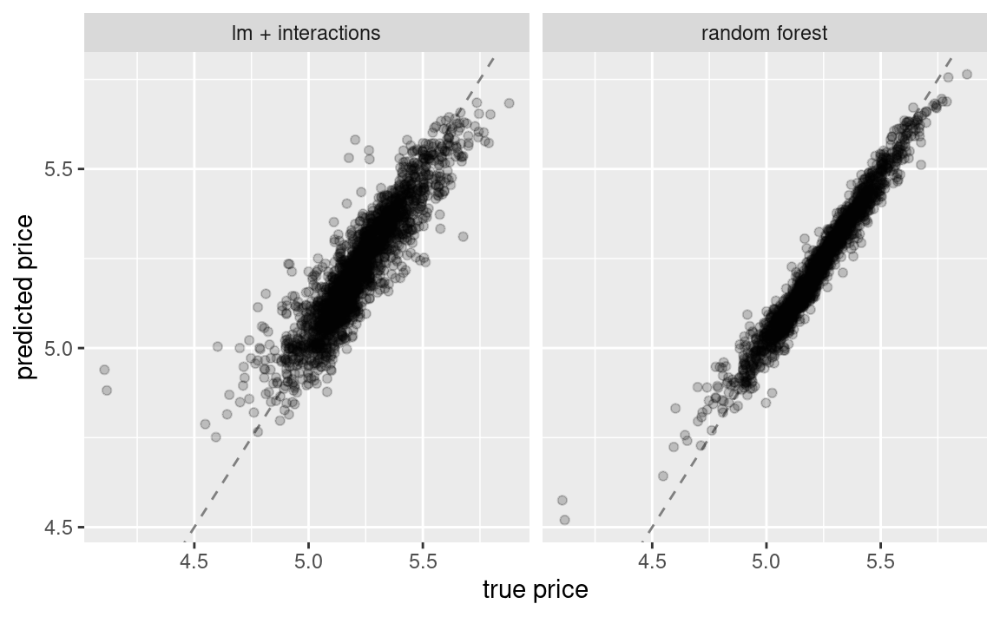
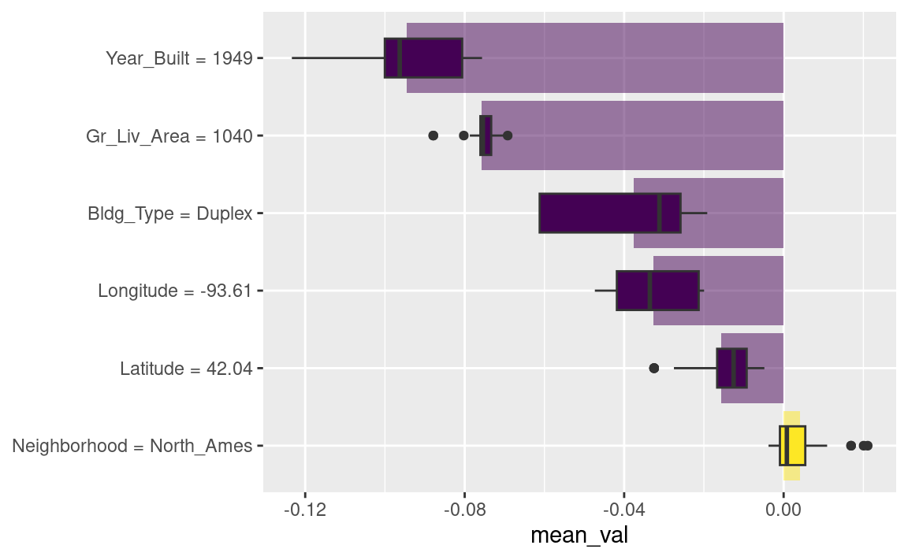
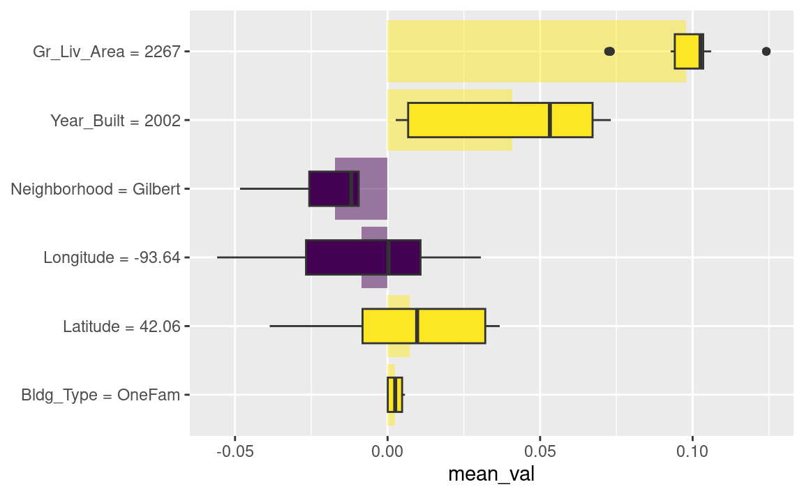
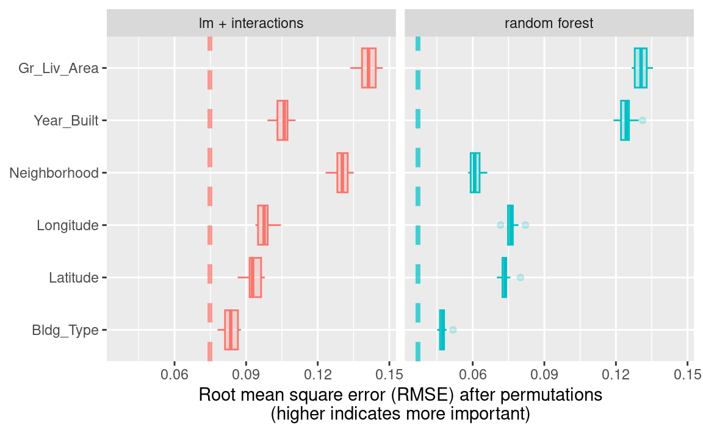
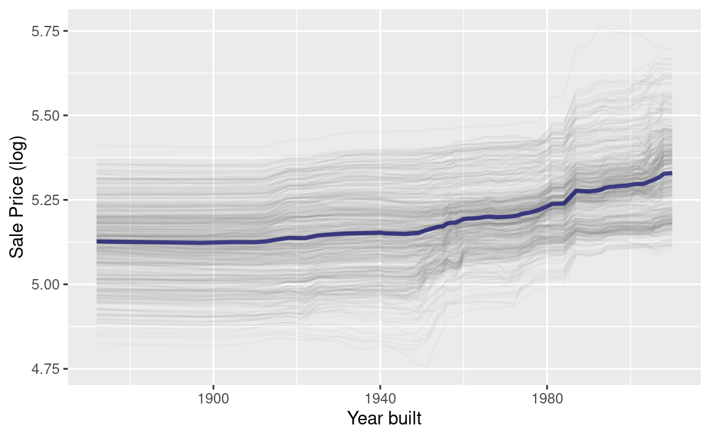
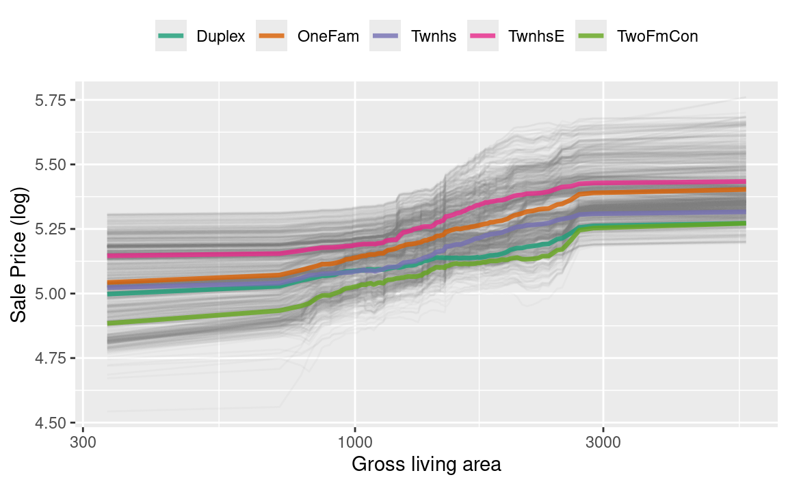
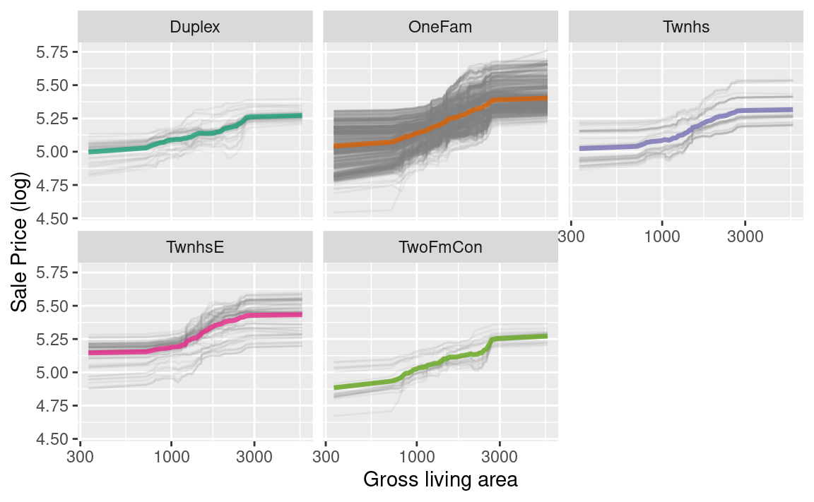
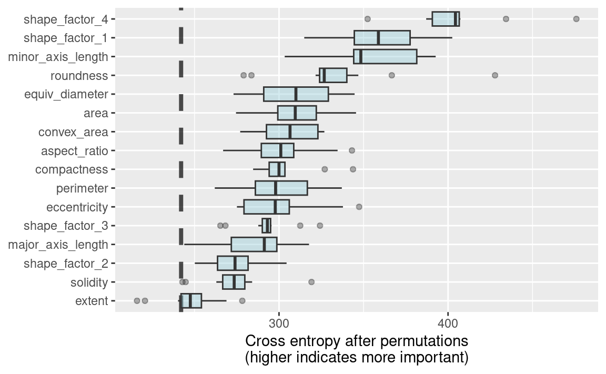

18 Explaining Models and Predictions
在第1.2节中，我们概述了一种模型分类法，并指出模型通常被构建为描述性、推理性或预测性中的一种或多种类型。我们还提到，无论何种建模应用，模型性能都至关重要——这可由适当的评估指标来衡量，例如回归任务中的RMSE，或分类任务中的ROC曲线下的面积。同样地，模型解释——即解答模型为何做出特定预测——无论你的模型主要用于描述性分析、检验假设，还是进行预测，都可能发挥关键作用。通过回答“为什么”这个问题，建模从业者能够深入了解哪些特征对预测结果起到了重要作用，甚至能预测当特征值发生变化时，模型的预测结果将如何调整。本章将介绍如何向模型提问，以揭示其做出预测的原因。
对于一些模型，比如线性回归，通常很容易解释为何模型会做出预测。线性模型的结构中包含每个预测变量的系数，这些系数往往直观易懂。然而，对于其他模型，例如随机森林——由于其天生具备捕捉非线性行为的能力，单纯从模型结构本身来解释预测结果则显得不够清晰。因此，我们可以借助模型解释算法，帮助深入理解模型的预测过程。
模型解释分为两种类型：全局解释和局部解释。全局模型解释提供基于整组观测数据的总体理解；而局部模型解释则针对单个观测结果的预测，给出相关的信息。
Software for Model Explanations
tidymodels 框架本身并不包含用于模型解释的软件。相反，使用 tidymodels 训练和评估的模型，可以通过 R 包中的其他补充软件（如 lime、vip 和 DALEX）来进行解释。我们通常会选择：
当希望采用利用模型结构的，基于模型的方法时，使用 vip 函数（这些方法通常速度更快）；
当需要应用适用于任何模型的，与模型无关的方法时，使用 DALEX 函数。
在第10章和第11章中，我们训练并比较了几种模型，以预测爱荷华州Ames市的房价，其中包括一个包含交互项的线性模型和一个随机森林模型，结果如 Figure 1 所示。
让我们为这两种模型构建与模型无关的解释器，以揭示它们做出这些预测的原因。我们可以使用 DALEX 的附加包 DALEXtra，该包为tidymodels提供了支持。Biecek 和 Burzykowski（2021）详细探讨了如何利用 DALEX 进行模型解释；本章仅简要总结几种适用于tidymodels的重要方法。无论要计算全局还是局部的任何类型模型解释，首先我们需要准备合适的数据，然后分别为每个模型创建一个解释器：
library(DALEXtra)
#> Loading required package: DALEX
#> Welcome to DALEX (version: 2.5.3).
#> Find examples and detailed introduction at: http://ema.drwhy.ai/
#> Additional features will be available after installation of: ggpubr.
#> Use 'install_dependencies()' to get all suggested dependencies
#>
#> Attaching package: 'DALEX'
#> The following object is masked from 'package:dplyr':
#>
#> explain
vip_features <- c(
"Neighborhood", "Gr_Liv_Area", "Year_Built",
"Bldg_Type", "Latitude", "Longitude"
)
vip_train <-
ames_train %>%
select(all_of(vip_features))
explainer_lm <-
explain_tidymodels(
lm_fit,
data = vip_train,
y = ames_train$Sale_Price,
label = "lm + interactions",
verbose = FALSE
)
explainer_rf <-
explain_tidymodels(
rf_fit,
data = vip_train,
y = ames_train$Sale_Price,
label = "random forest",
verbose = FALSE
)线性模型通常易于理解和解释；你可能很少需要为线性模型专门使用额外的模型解释算法。然而，一旦模型中引入了样条函数和交互项，即使是线性模型的预测结果也可能变得难以理解或解释！
在模型可解释性过程中处理重要的特征工程转换时，凸显了我们所拥有的几种选择（有时，这类分析也存在模糊性）。我们可以从以下两个角度量化全局或局部的模型解释：
以未经显著特征工程转换、原始的基本预测变量为基准；
或者采用衍生特征，例如通过降维技术（第16章）或本例中提到的交互项和样条函数生成的特征。
Local Explanations
局部模型解释提供了针对单个观测值预测的相关信息。例如，让我们考虑位于“North Ames”社区的一栋较老的复式住宅（第4.1节）：
duplex <- vip_train[120, ]
duplex
#> # A tibble: 1 × 6
#> Neighborhood Gr_Liv_Area Year_Built Bldg_Type Latitude Longitude
#> <fct> <dbl> <dbl> <fct> <dbl> <dbl>
#> 1 North_Ames 1040 1949 Duplex 42.0 -93.6理解为何模型会为这套复式住宅预测出特定价格，有多种可能的方法。其中一种是分解式解释，可通过DALEX函数predict_parts()实现；该方法计算各个特征的贡献如何改变模型对特定观测值（如我们的这套复式住宅）的平均预测结果。对于线性模型而言，复式住宅的建筑类型（Bldg_Type = 3）、面积、经度以及房龄，都是导致价格相较于截距值被拉低的主要因素。
lm_breakdown <- predict_parts(explainer = explainer_lm, new_observation = duplex)
lm_breakdown
#> contribution
#> lm + interactions: intercept 5.221
#> lm + interactions: Gr_Liv_Area = 1040 -0.082
#> lm + interactions: Bldg_Type = Duplex -0.049
#> lm + interactions: Longitude = -93.608903 -0.043
#> lm + interactions: Year_Built = 1949 -0.039
#> lm + interactions: Latitude = 42.035841 -0.007
#> lm + interactions: Neighborhood = North_Ames 0.001
#> lm + interactions: prediction 5.002由于该线性模型是使用经纬度的样条项进行训练的，因此此处显示的经度Longitude对价格的贡献，已综合考虑了其所有单独样条项的影响。这一贡献是以原始经度Longitude特征为单位计算的，而非基于派生的样条特征。
随机森林模型最重要的特征略有不同，其中房屋面积、年龄和是否为复式结构最为关键：
rf_breakdown <- predict_parts(explainer = explainer_rf, new_observation = duplex)
rf_breakdown
#> contribution
#> random forest: intercept 5.221
#> random forest: Year_Built = 1949 -0.076
#> random forest: Gr_Liv_Area = 1040 -0.075
#> random forest: Bldg_Type = Duplex -0.027
#> random forest: Longitude = -93.608903 -0.043
#> random forest: Latitude = 42.035841 -0.028
#> random forest: Neighborhood = North_Ames -0.003
#> random forest: prediction 4.969像这样的模型分解解释依赖于特征的顺序。
如果我们选择随机森林模型的特征重要性排序方式与线性模型的默认方式相同（通过启发式方法确定），我们就能改变各特征的相对重要性：
predict_parts(
explainer = explainer_rf,
new_observation = duplex,
order = lm_breakdown$variable_name
)
#> contribution
#> random forest: intercept 5.221
#> random forest: Gr_Liv_Area = 1040 -0.075
#> random forest: Bldg_Type = Duplex -0.019
#> random forest: Longitude = -93.608903 -0.023
#> random forest: Year_Built = 1949 -0.104
#> random forest: Latitude = 42.035841 -0.028
#> random forest: Neighborhood = North_Ames -0.003
#> random forest: prediction 4.969我们可以利用这些分解解释会随顺序变化这一特性，来计算在所有（或多种）可能顺序下的最重要特征。这正是Shapley可加性解释法（Lundberg 和 Lee，2017）的核心思想：通过不同特征顺序的组合或“联盟”，计算出特征在各种情况下的平均贡献。现在，让我们为我们的双层住宅模型计算SHAP归因值，采用B = 20随机顺序：
set.seed(1801)
shap_duplex <-
predict_parts(
explainer = explainer_rf,
new_observation = duplex,
type = "shap",
B = 20
)我们可以调用 plot(shap_duplex) 来使用 DALEX 提供的默认绘图方法，或者也可以直接访问底层数据，创建自定义图表。Figure 2 中的箱形图展示了我们在所有尝试过的排序中贡献值的分布情况，而条形图则显示了每个特征的平均归因值：
library(forcats)
shap_duplex %>%
group_by(variable) %>%
mutate(mean_val = mean(contribution)) %>%
ungroup() %>%
mutate(variable = fct_reorder(variable, abs(mean_val))) %>%
ggplot(aes(contribution, variable, fill = mean_val > 0)) +
geom_col(
data = ~ distinct(., variable, mean_val),
aes(mean_val, variable),
alpha = 0.5
) +
geom_boxplot(width = 0.5) +
theme(legend.position = "none") +
scale_fill_viridis_d() +
labs(y = NULL)

那我们数据集中有没有其他不同的观察结果呢？让我们来看看吉尔伯特社区一栋更大、更新的一户住宅：
big_house <- vip_train[1269, ]
big_house
#> # A tibble: 1 × 6
#> Neighborhood Gr_Liv_Area Year_Built Bldg_Type Latitude Longitude
#> <fct> <dbl> <dbl> <fct> <dbl> <dbl>
#> 1 Gilbert 2267 2002 OneFam 42.1 -93.6我们可以以相同的方式计算这栋房子的SHAP平均贡献值：
set.seed(1802)
shap_house <-
predict_parts(
explainer = explainer_rf,
new_observation = big_house,
type = "shap",
B = 20
)结果如 Figure 3 所示；与复式住宅不同，这栋房屋的面积和房龄使其价格更高。
shap_house %>%
group_by(variable) %>%
mutate(mean_val = mean(contribution)) %>%
ungroup() %>%
mutate(variable = fct_reorder(variable, abs(mean_val))) %>%
ggplot(aes(contribution, variable, fill = mean_val > 0)) +
geom_col(
data = ~ distinct(., variable, mean_val),
aes(mean_val, variable),
alpha = 0.5
) +
geom_boxplot(width = 0.5) +
scale_fill_viridis_d() +
theme(legend.position = "none") +
labs(y = NULL)

Global Explanations
全局模型解释，也称为全局特征重要性或变量重要性，有助于我们理解哪些特征在整体上对线性模型和随机森林模型的预测起着最重要作用——这种重要性是基于整个训练集进行汇总分析得出的。尽管前一节讨论的是哪些变量或特征最能单独预测某栋房屋的销售价格，但全局特征重要性关注的则是模型中所有变量的综合重要性。
计算变量重要性的一种方法是通过对特征进行置换（Breiman 2001）。我们可以随机打乱某个特征的取值，用模型进行预测，然后衡量与未打乱时相比，模型对数据的拟合效果究竟恶化了多少。
如果对某一列进行洗牌后，模型性能显著下降，那么该列就非常重要；而如果洗牌该列的值对模型表现几乎没有影响，则说明它并非关键变量。这种方法适用于任何类型的模型（具有模型无关性），且结果易于理解。
借助DALEX，我们通过model_parts()函数计算此类变量的重要性：
set.seed(1803)
vip_lm <- model_parts(explainer_lm, loss_function = loss_root_mean_square)
set.seed(1804)
vip_rf <- model_parts(explainer_rf, loss_function = loss_root_mean_square)同样，我们可以通过调用plot(vip_lm, vip_rf)来使用 DALEX 提供的默认绘图方法，但底层数据也可用于探索、分析和进一步绘图。让我们来创建一个绘图函数：
ggplot_imp <- function(...) {
obj <- list(...)
metric_name <- attr(obj[[1]], "loss_name")
metric_lab <- paste(
metric_name,
"after permutations\n(higher indicates more important)"
)
full_vip <- bind_rows(obj) %>%
filter(variable != "_baseline_")
perm_vals <- full_vip %>%
filter(variable == "_full_model_") %>%
group_by(label) %>%
summarise(dropout_loss = mean(dropout_loss))
p <- full_vip %>%
filter(variable != "_full_model_") %>%
mutate(variable = fct_reorder(variable, dropout_loss)) %>%
ggplot(aes(dropout_loss, variable))
if (length(obj) > 1) {
p <- p +
facet_wrap(vars(label)) +
geom_vline(
data = perm_vals, aes(xintercept = dropout_loss, color = label),
linewidth = 1.4, lty = 2, alpha = 0.7
) +
geom_boxplot(aes(color = label, fill = label), alpha = 0.2)
} else {
p <- p +
geom_vline(
data = perm_vals, aes(xintercept = dropout_loss),
linewidth = 1.4, lty = 2, alpha = 0.7
) +
geom_boxplot(fill = "#91CBD765", alpha = 0.4)
}
p +
theme(legend.position = "none") +
labs(
x = metric_lab,
y = NULL, fill = NULL, color = NULL
)
}使用ggplot_imp(vip_lm, vip_rf)生成了 Figure 4 。
ggplot_imp(vip_lm, vip_rf)

Figure 4 中每个面板中的虚线显示了完整模型的RMSE，即线性模型或随机森林模型。越靠右侧的特征越重要，因为打乱这些特征后会导致RMSE显著升高。从该图中可以发现许多有趣的信息：例如，在包含交互项和样条函数的线性模型中，邻里信息非常重要；而在随机森林模型中，它却是第二不重要的特征。
Building Global Explanations from Local Explanations
到目前为止，本章我们主要关注针对单个样本的局部模型解释（通过Shapley加性解释），以及针对整个数据集的全局模型解释（通过特征置换法）。此外，还可以通过聚合局部模型解释来构建全局模型解释，例如使用偏导数依赖图（partial dependence profiles）。
偏导数依赖图展示了模型预测的期望值（例如Ames房屋的预测价格）如何随某一特征（如房屋年龄或总居住面积）的变化而变化。
构建此类特征图的一种方法是，通过汇总或平均单个观测的特征图来实现。一种展示单个观测预测值如何随特定特征变化的特征图，被称为ICE（individual conditional expectation）特征图，或简称CP（ceteris paribus）特征图。我们可以计算这些个体特征图（针对训练集中500个观测），然后利用DALEX函数中的model_profile()进行汇总：
set.seed(1805)
pdp_age <- model_profile(explainer_rf, N = 500, variables = "Year_Built")让我们再创建一个函数，用于绘制该对象中的底层数据：
ggplot_pdp <- function(obj, x) {
p <-
as_tibble(obj$agr_profiles) %>%
mutate(`_label_` = stringr::str_remove(`_label_`, "^[^_]*_")) %>%
ggplot(aes(`_x_`, `_yhat_`)) +
geom_line(
data = as_tibble(obj$cp_profiles),
aes(x = {{ x }}, group = `_ids_`),
linewidth = 0.5, alpha = 0.05, color = "gray50"
)
num_colors <- n_distinct(obj$agr_profiles$`_label_`)
if (num_colors > 1) {
p <- p + geom_line(aes(color = `_label_`), linewidth = 1.2, alpha = 0.8)
} else {
p <- p + geom_line(color = "midnightblue", linewidth = 1.2, alpha = 0.8)
}
p
}使用此功能可生成 Figure 5 ，从中我们可以看到随机森林模型的非线性行为。
ggplot_pdp(pdp_age, Year_Built) +
labs(
x = "Year built",
y = "Sale Price (log)",
color = NULL
)

不同年份建造的房屋售价基本持平，但在1960年左右之后出现小幅上涨。此外，我们还可以针对模型中的任何其他特征，以及数据中的各类别（例如Bldg_Type），计算部分依赖性曲线。本次分析将采用1000个观测值来生成这些曲线。
set.seed(1806)
pdp_liv <- model_profile(explainer_rf,
N = 1000,
variables = "Gr_Liv_Area",
groups = "Bldg_Type"
)
ggplot_pdp(pdp_liv, Gr_Liv_Area) +
scale_x_log10() +
scale_color_brewer(palette = "Dark2") +
labs(
x = "Gross living area",
y = "Sale Price (log)",
color = NULL
) +
theme(legend.position = "top")

从 Figure 6 中我们可以看到，销售价格在居住面积约为1000至3000平方英尺之间增长最为显著；同时，不同类型的住宅（如独立式住宅或不同类型的联排别墅）在其售价随居住面积增加时，大多呈现出相似的增长趋势。
我们可以选择使用plot(pdp_liv)来生成默认的DALEX图表，但由于我们这里直接基于原始数据绘制图表，因此甚至可以按其中一个特征进行分面处理，以直观展示预测结果是否因不同子组而有所变化，并突出这些子组间的不平衡现象（如 Figure 7 所示）。
as_tibble(pdp_liv$agr_profiles) %>%
mutate(Bldg_Type = stringr::str_remove(`_label_`, "random forest_")) %>%
ggplot(aes(`_x_`, `_yhat_`, color = Bldg_Type)) +
geom_line(
data = as_tibble(pdp_liv$cp_profiles),
aes(x = Gr_Liv_Area, group = `_ids_`),
linewidth = 0.5, alpha = 0.1, color = "gray50"
) +
geom_line(linewidth = 1.2, alpha = 0.8, show.legend = FALSE) +
scale_x_log10() +
facet_wrap(~Bldg_Type) +
scale_color_brewer(palette = "Dark2") +
labs(
x = "Gross living area",
y = "Sale Price (log)",
color = NULL
)

构建模型解释并没有唯一正确的方法，本章所列出的选项也并非详尽无遗。我们重点介绍了适用于个体层面和全局层面的良好解释方法，以及如何实现两者的有效衔接，并推荐您进一步阅读Biecek和Burzykowski（2021）及Molnar（2020）的相关内容。
Back to Beans!
在第16章中，我们讨论了在建模高维数据时，如何将降维技术用作特征工程或预处理步骤。以我们用于预测豆类品种的干豆形态测量数据集为例，发现结合正则化判别分析模型与偏最小二乘法（PLS）降维后，效果非常显著。那么，在这些形态特征中，哪些对豆类品种的预测最为重要呢？我们可以采用本章中介绍的方法，构建一种与模型无关的解释工具，并通过model_parts()函数计算全局模型解释，例如：
library(beans)
set.seed(1601)
bean_split <- initial_split(beans, strata = class, prop = 3 / 4)
bean_train <- training(bean_split)
bean_test <- testing(bean_split)
load("/home/hgj/D/Blog/Books/Tidy Modeling with R/Rdata/rda_fit.RData")
# load("RData/rda_fit.RData")
set.seed(1807)
vip_beans <-
explain_tidymodels(
rda_wflow_fit,
data = bean_train %>% select(-class),
y = bean_train$class,
label = "RDA",
verbose = FALSE
) %>%
model_parts()

使用我们之前定义的重要度绘图函数，ggplot_imp(vip_beans) 生成了 Figure 8 。我们在 Figure 8 中看到的全局特征重要性度量，综合考虑了所有PLS成分的影响，但以原始变量为依据。Figure 8 向我们展示了，形状因子是预测豆类类型最重要的特征之一，尤其是形状因子4——一种综合考虑面积\(A\)、长轴\(L\)和短轴\(l\)的坚实度衡量指标：
\[ \text{SF4} = \frac{A}{\pi(L/2)(l/2)} \]
从 Figure 8 中我们可以看到，形状因子1（长轴与面积之比）、短轴长度及圆度是预测豆类品种的接下来最重要的几个特征。
Chapter Summary
对于某些类型的模型，解释模型为何做出特定预测的答案非常直接；但对另一些模型而言，我们必须借助专门的解释算法，才能弄清哪些特征对预测结果最为关键。从训练好的模型中，你可以生成两种主要类型的模型解释：全局解释提供基于整个数据集汇总的信息，而局部解释则帮助理解模型针对单个样本的具体预测情况。
像DALEX及其配套包DALEXtra、vip和lime这样的工具，都可以整合到tidymodels分析中，以提供这些模型解释器。然而，模型解释只是理解你的模型是否合适且有效的一个方面，此外还需结合模型性能的评估；第19章将进一步探讨预测的质量与可信度。